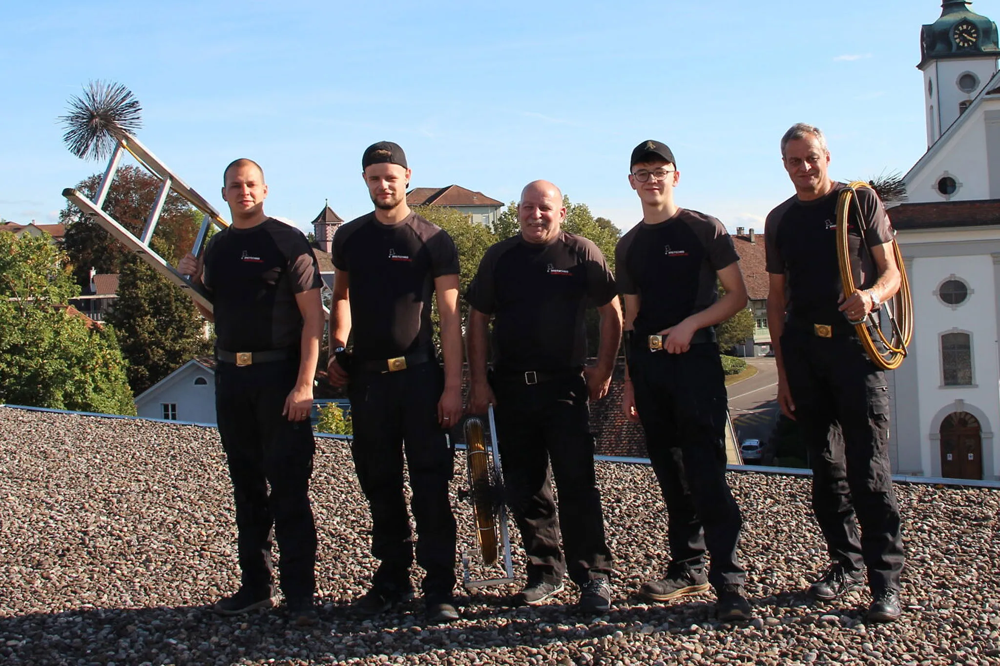
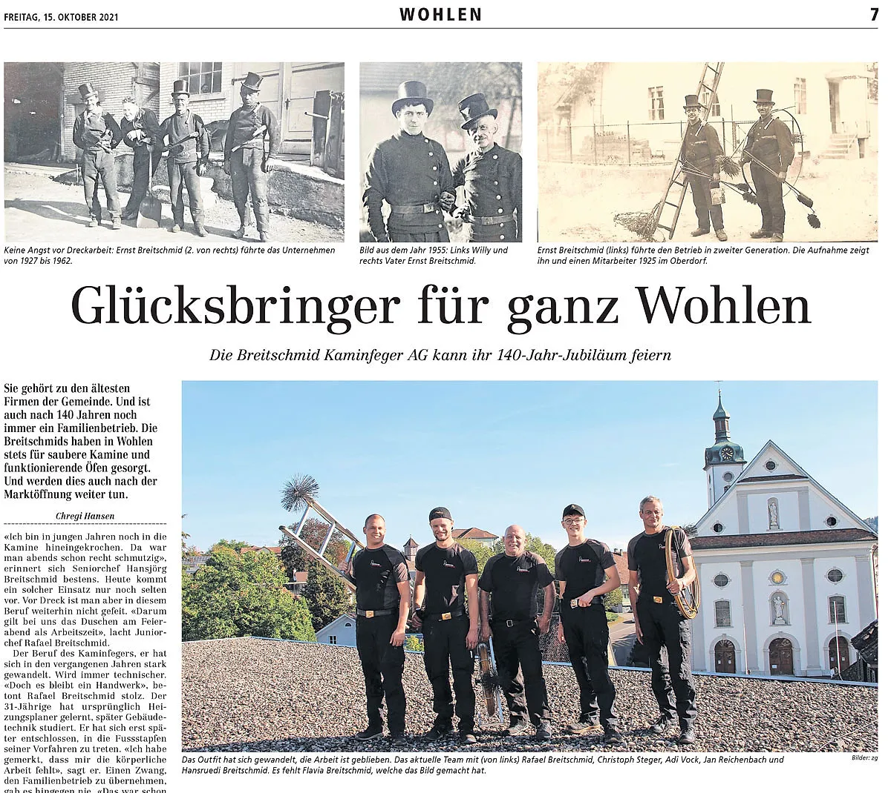
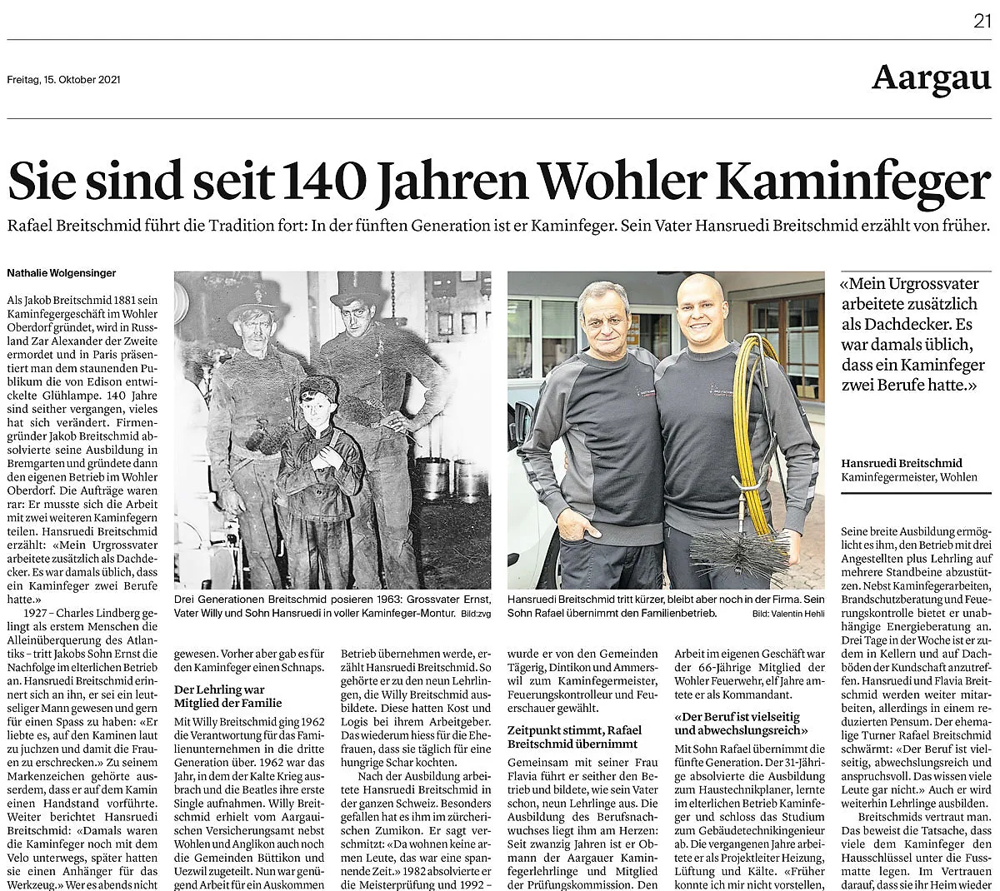
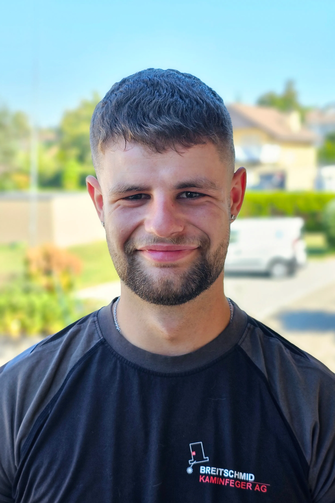

Ihr Kaminfeger in Wohlen und im Freiamt · seit 1881
Ihr Kaminfeger in Wohlen und im Freiamt: Sicher heizen. Sauber wohnen. Seit 145 Jahren.

Seit 1881 geniesst die Breitschmid Kaminfeger AG das Vertrauen der Kundschaft im Freiamt. Wir sorgen dafür, dass Ihre Feuerungsanlage sicher, sauber und effizient läuft.
Ein innovatives Familienunternehmen mit bestens ausgebildetem Fachpersonal – Ihr Ansprechpartner für Kaminfegerarbeiten, Feuerungskontrollen und Brandschutzfragen im Kanton Aargau.
- Jahre Erfahrung im Freiamt
- 145
- Generationen Familienbetrieb
- 5
- Gemeinden mit amtlichen Aufträgen
- 14
Unsere Dienstleistungen
Ob Cheminée, Ölheizung oder Solaranlage: Wir prüfen, reinigen, messen und beraten – im ganzen Kanton Aargau.
Kaminfegerarbeiten
Ihr Profi für Kamin- und Feuerungsanlagen.
Mehr dazuFeuerungskontrolle
Eine lufthygienische Messung oder Kontrolle.
Mehr dazuBrandschutz
Wir begleiten Ihr Vorhaben während der Bauzeit.
Mehr dazuSolarreinigung
Profitieren Sie von einer höheren Energieproduktion.
Mehr dazuEnergieberatung
Unabhängig beraten vor dem Heizungsersatz.
Mehr dazu
Saubere Anlagen. Sichere Häuser. Seit 145 Jahren.
Unser Einzugsgebiet
Kaminfegerarbeiten und Feuerungskontrollen bieten wir im ganzen Kanton Aargau an. In diesen Gemeinden sind wir zudem amtlich tätig – als Feuerungskontrolleur, im kommunalen Brandschutz oder bei Rohbaukontrollen:
- Wohlen
- Anglikon
- Ammerswil
- Bellikon
- Bremgarten
- Büttikon
- Dintikon
- Fischbach-Göslikon
- Hermetschwil-Staffeln
- Niederwil
- Tägerig
- Uezwil
- Widen
- Zufikon
Unser Standort: Ehrunsbachstrasse 4, 5610 Wohlen
Das sagen unsere Kundinnen und Kunden
- Platzhalter KundenstimmeHier erscheinen echte Google-Bewertungen oder Zitate von Kundinnen und Kunden – mit deren Einverständnis.
- Platzhalter KundenstimmeHier erscheinen echte Google-Bewertungen oder Zitate von Kundinnen und Kunden – mit deren Einverständnis.
- Platzhalter KundenstimmeHier erscheinen echte Google-Bewertungen oder Zitate von Kundinnen und Kunden – mit deren Einverständnis.
Häufige Fragen
Kurz erklärt: Pflichten, Intervalle und was Sie bei einer neuen Anlage beachten müssen.
Wie oft muss der Kaminfeger kommen?
Das hängt vom Brennstoff ab. Kleinanlagen mit Gas mindestens alle 2 Jahre, mit Öl 1-mal pro Jahr, Holzfeuerungen (Cheminée, Schwedenofen, Holzheizung) 1- bis 2-mal pro Jahr. Grossanlagen werden häufiger gereinigt.
Mehr erfahrenKann ich meinen Kaminfeger in Wohlen selbst wählen?
Ja. Seit Januar 2022 liegt der Unterhalt von Feuerungsanlagen im Kanton Aargau in der Eigenverantwortung der Eigentümerinnen und Eigentümer. Sie beauftragen einen registrierten Kaminfegerbetrieb Ihrer Wahl – wir übernehmen gerne die Verantwortung und melden uns in den vorgegebenen Intervallen.
Mehr erfahrenKommen Sie auch zu mir nach Hause?
Kaminfegerarbeiten und Feuerungskontrollen bieten wir im ganzen Kanton Aargau an. Amtlich tätig sind wir in Wohlen, Anglikon, Ammerswil, Bellikon, Bremgarten, Büttikon, Dintikon, Fischbach-Göslikon, Hermetschwil-Staffeln, Niederwil, Tägerig, Uezwil, Widen und Zufikon.
Mehr erfahrenMuss mein Holzofen seit 2026 gemessen werden?
Der Kanton Aargau setzt seit dem 1. Januar 2026 die Messpflicht für kleine Holzfeuerungen bis 70 Kilowatt um. Ob und wie Ihre Anlage betroffen ist, hängt vom Anlagetyp ab – wir klären das bei der nächsten Kontrolle mit Ihnen.
Mehr erfahrenWas passiert, wenn ich meine Anlage nicht reinigen lasse?
Neben dem höheren Brand- und Schadstoffrisiko kann die Aargauische Gebäudeversicherung nach einem Schadenfall ihre Leistungen kürzen, wenn kein Nachweis über Kontrolle und Reinigung vorliegt.
Mehr erfahrenWas kostet der Kaminfeger?
Das hängt von Anlage, Brennstoff und Aufwand ab. Rufen Sie uns an oder schreiben Sie uns – wir sagen Ihnen gerne, womit Sie rechnen können. (Platzhalter: Preisrahmen mit Breitschmid abklären.)
Mehr erfahrenDer angekündigte Termin passt mir nicht – was nun?
Kein Problem: Über das Formular «Termin verschieben» oder per Telefon finden wir einen neuen Termin. Bis wir den neuen Termin bestätigt haben, bleibt der bisherige reserviert.
Mehr erfahrenIch plane einen neuen Ofen oder eine neue Heizung – was muss ich beachten?
Neubau, Einrichtung oder Änderung von Feuerungsanlagen sind meldepflichtig. Die erste Messung (Abnahmemessung) macht der amtliche Feuerungskontrolleur der Gemeinde – möglichst innert drei Monaten nach Inbetriebnahme. Vor einem Heizungsersatz beraten wir Sie gerne.
Mehr erfahrenNews und Aktuelles

Glücksbringer für ganz Wohlen
Die Breitschmid Kaminfeger AG feiert ihr 140-Jahr-Jubiläum. Ein Artikel aus dem Wohler Anzeiger von Chregi Hansen.
Zum Artikel (PDF)
Seit 140 Jahren Wohler Kaminfeger
Rafael Breitschmid führt die Tradition in fünfter Generation fort. Sein Vater Hansruedi erzählt von früher. Ein Artikel aus dem Wohler Anzeiger von Nathalie Wolgensinger.
Zum Artikel (PDF)
Unser Team
Fünf Generationen Erfahrung und laufende Weiterbildung: Als Lehrbetrieb bilden wir seit über 70 Jahren junge Fachleute aus. Lernen Sie die Menschen kennen, die bei Ihnen vorbeikommen.
145 Jahre Erfahrung

Rafael Breitschmid
Kaminfeger EFZ, BSc Gebäudetechnik HLKS

Hansruedi Breitschmid
Eidg. dipl. Kaminfegermeister

Christoph Steger
Feuerungskontrolleur, Berufsbildner

Florian Stahel
Kaminfeger, Arbeitsplanung
Nehmen Sie Kontakt mit uns auf
Fragen zu Ihrer Anlage, eine Offerte oder ein neuer Termin? Wir sind gerne für Sie da.
Öffnungszeiten: Platzhalter – mit Breitschmid abklären
Bestehender Termin passt nicht?Hier können Sie ihn verschieben.